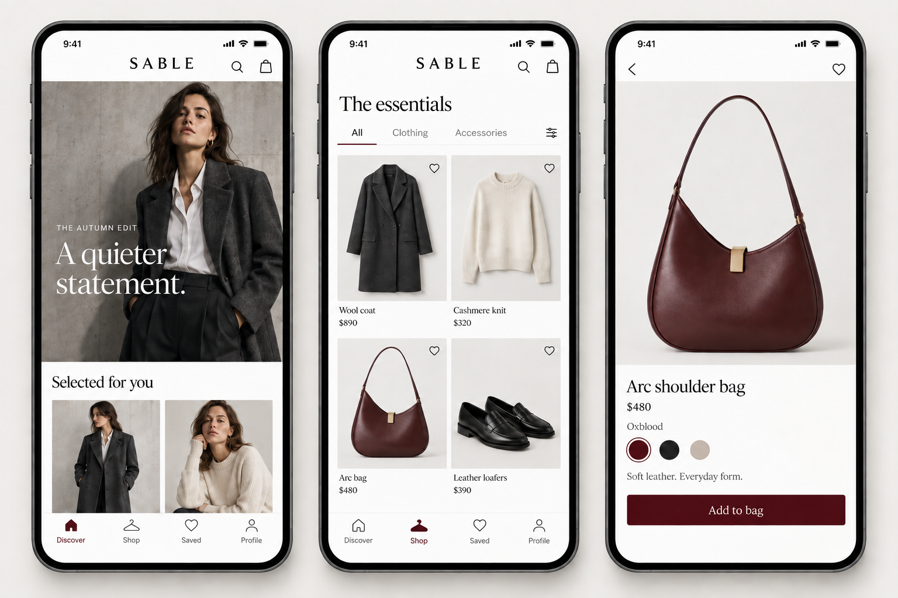

The complete article
Creation, references, visual mapping, reconstruction JSON, sketches, repairs, and fair comparisons, with premium results throughout.
Open the article →Read the method, inspect the actual images, and copy the prompts behind them. Keep the parts that work. Make the next change explicit.

Creation, references, visual mapping, reconstruction JSON, sketches, repairs, and fair comparisons, with premium results throughout.
Open the article →Search submitted prompts, inspect references and outputs, and read the failures and repair histories. Plain-text and JSON editions are included.
Search the library →Select the whole product or one named part. Keep, restyle, replace, remove, or move it, then export the planned edit as a prompt and JSON.
Open the VELLUM map →A portable workflow, schema, validator, compiler, source image, and worked reconstruction. Generation uses your agent’s image tools.
Download the skill →The method and all selected studies, with results and prompt excerpts. The library contains the full submitted text.
Open the PDF →Twelve crisp graphics covering reference roles, visual inventories, editing choices, experiments, and agent comparisons.
Copy or download the images →